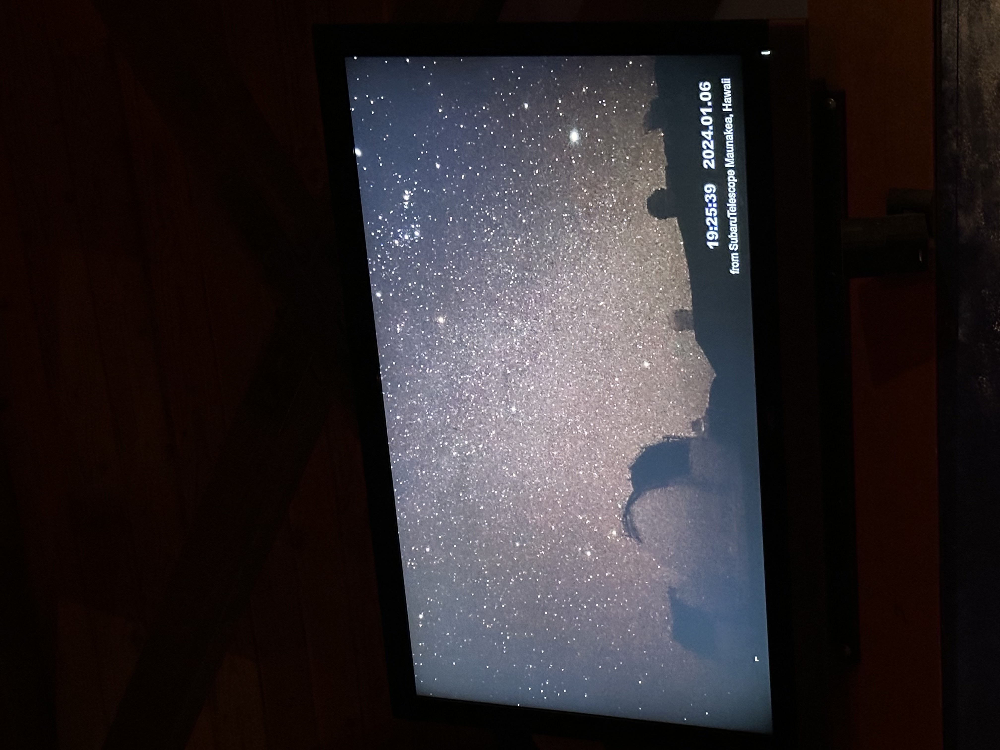
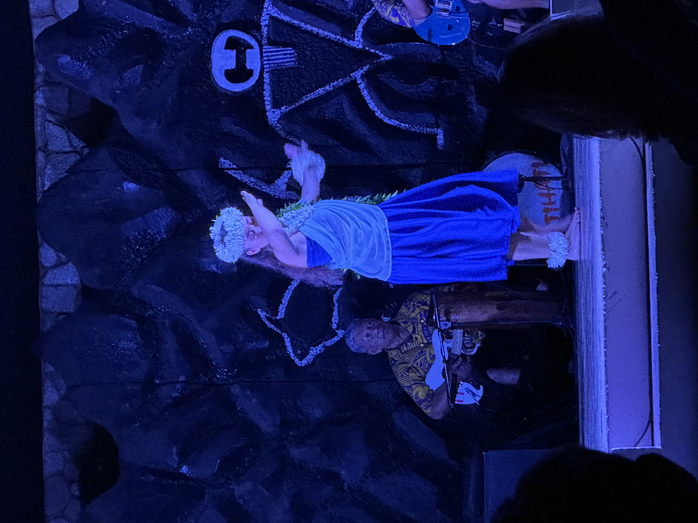
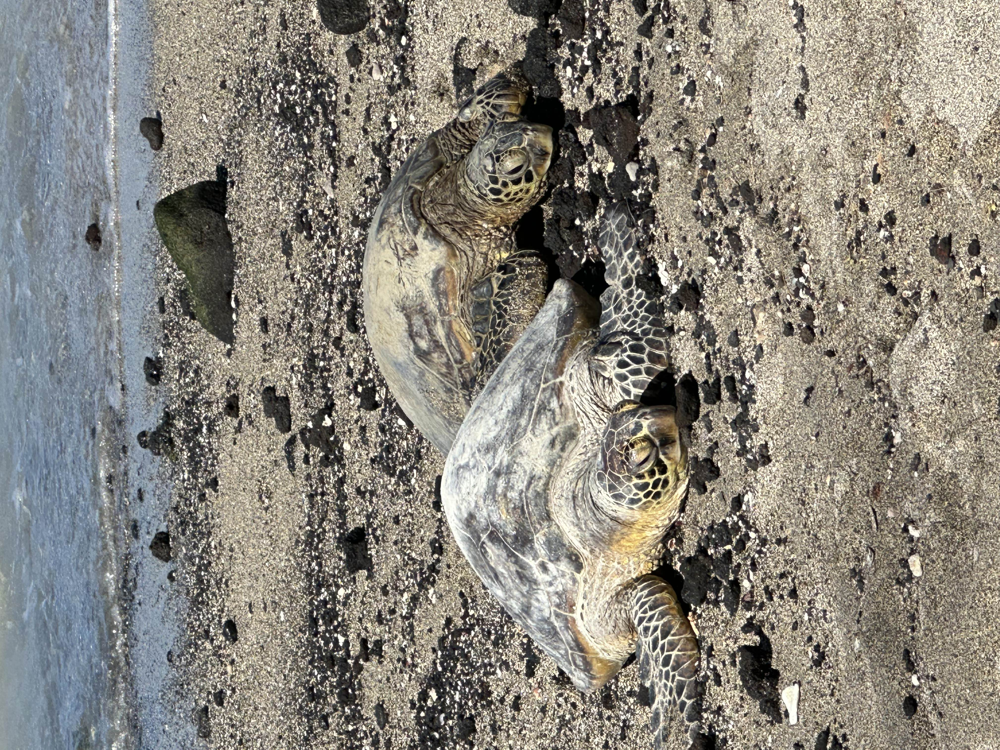

Mauna Kea Observatory
Visting the observatories on top of Mauna Kea was easily one of my top highlights of my trip. Though it was quite cold on top of the mountain (though not nearly as cold as it gets in Canada!) once the sun set, we were able to see the stars so clearly. Since the Big Island houses the observatories, the entire island works to omit minimal light pollution, so as to give the observatories the best view possible of the stars. The view was indescribable.
Legends of Hawaii Luau
Another highlight of my trip was getting to attend the Legends of Hawaii luau. The luau lasted quite awhile, and included the best meal I'd eaten my entire trip.. and maybe even the best meal I've eaten since! We got to watch the band and dancers as we ate, and they told a beautiful story through hula dance and music. They were throwing fire, changing costumes, and even brought some of the audience on stage to learn a short hula dance. It was an outstanding experience, and one I won't soon forget.
Walk or Snorkel
Being able to go for a walk or snorkel while in Hawaii and see the beautiful wildlife was definitely one of my favorite parts of my trip. I took this photo while on a walk at Anaeho'omalu Bay, where there were tons of green turtles napping on the beach. I do have a fear of the open ocean (thalassaphobia, anyone?), but luckily, we were able to snorkel within a man-made lagoon at our hotel. All of the fish in the lagoon were such bright and vibrant colors, but when I saw an eel hiding beneath a group of rocks I noped right back onto the beach. Snorkelling was definitely one of my favorite parts of the trip.